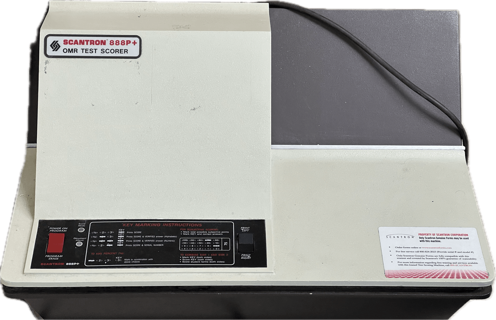
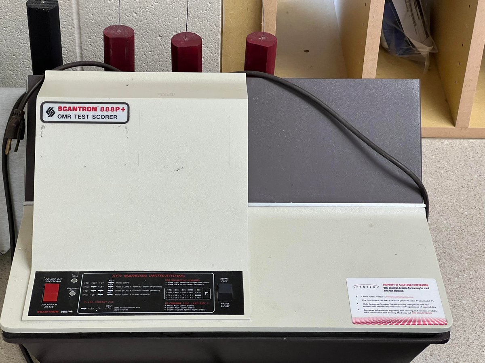
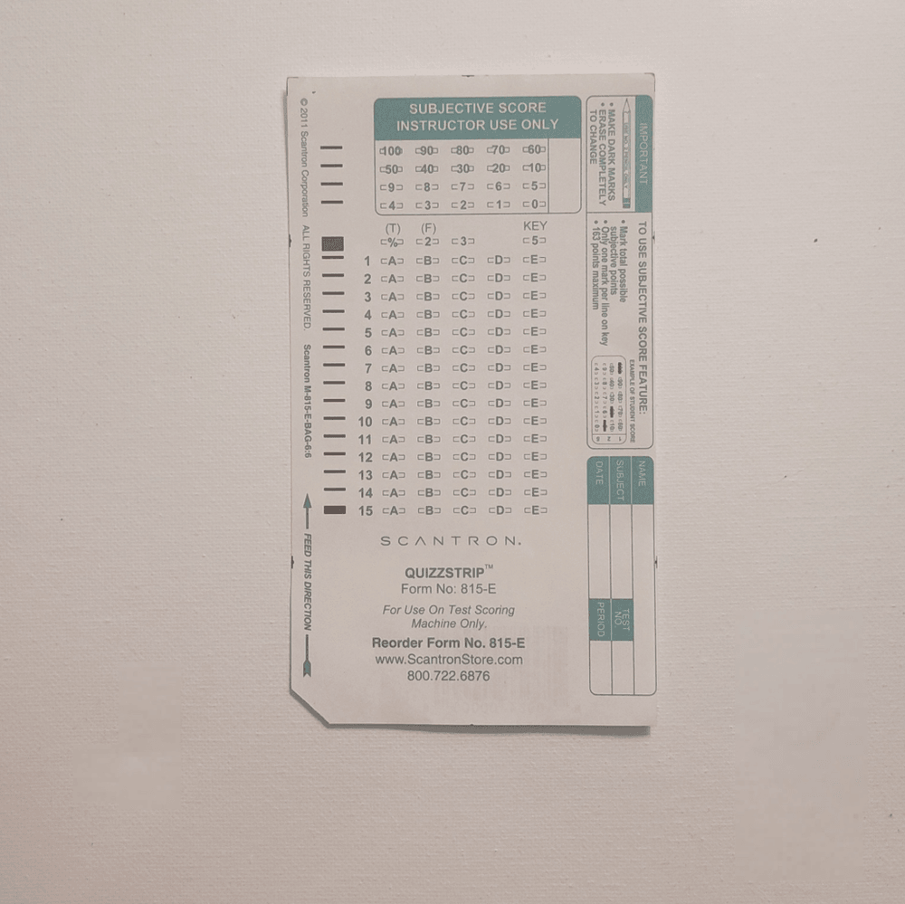

Scantron 888P+ OMR Reader
A desktop optical-mark reader that turns a human-filled bubble sheet into machine-readable data — paper as the answer-and-data token

Overview
The Scantron 888P+ is a desktop optical-mark recognition (OMR) scoring machine — a fixture of American classrooms, clinics, and survey offices from the 1980s onward. Its defining interaction is radically different from any keyboard, mouse, or touchscreen: the data entry happens entirely on paper. A respondent fills in short ovals on a printed Scantron sheet — often with a No. 2 pencil — and the machine then reads those hand-darkened marks by sweeping light across the form and measuring the contrasting reflectivity of each oval against the blank paper. Darkened ovals reflect less light and are read as 'marked'; empty ovals are read as 'blank.' The resulting marks stream out as raw data (tallies, scores, survey responses), feeding a school's grading or an office's tallies with no retyping and no keyed characters. It is quintessential 'the medium is the interface' hardware: the human and the machine share a printed page as their common token.
Deep dive
Optical mark recognition grew out of the older punched-card and marksense traditions, but its practical, mass-market form is Scantron's. Scantron Corporation traces to business-machine salesman William E. Sanders, who founded SCAN-TRON in Tustin, California in 1972 and whose name supplied part of the company's coinage. Sanders recognized that a cheap, fast way to read hand-marked answer sheets would find a huge market in test grading. Scantron's machines and the near-generic 'Scantron sheet' became standard in U.S. schools; the company later claimed operations in a large share of American school districts and universities. The 888P+ represents the mid-1980s refinement of this desk-friendly OMR scoring genre.
The remarkable part is the division of labor between brain and machine. OMR strips away keyboards entirely. The user's only job is to make a physical mark at a known coordinate on a printed grid. The reader illuminates each marked position and measures reflected light: dark graphite or ink absorbs and is 'on'; clean paper reflects and is 'off.' Because the answer is encoded by position (which oval) and presence (filled or not) rather than by shape, the device needs no character-recognition engine — OMR is deliberately simpler and more reliable than optical character recognition. The machine resolves a bubble sheet in a fraction of a second and can process hundreds of sheets an hour, turning a stack of marked paper into a tally of right/wrong counts or survey responses.
The Scantron form is a genuine tangible input medium, not just a printed document. It encodes data in two physical channels: where you mark (column and row), and how you fill the oval (dark enough to read). The late-model 'lozenge/rectangular tick' forms replaced the large legacy bubbles that early, insensitive readers needed for reliability. A completed form is simultaneously a record a human can read, an answer sheet a test-taker holds, and source data a computer consumes — the same physical sheet bridges all three roles. That places OMR adjacent to the collection's other physical-token inputs — the Optel optical phonecard (value burned into a plastic strip), the Cauzin Softstrip (printed barcode as a data medium), and the supermarket laser scanner (machine-printed barcode as identity) — but distinct: only OMR lets the bare human hand write the data onto the shared token.
Scantron hardware was once nearly synonymous with American multiple-choice testing; at the genre's peak the machines were part of a routinized, bureaucratic grade-assessment pipeline. The OMR principle outlived the physical reader too: desktop OMR software later replaced dedicated hardware, letting a sheet printed on a laser printer be scanned through a common document feeder. But the 888P+ embodies the era's purest statement of the idea — dedicated, single-purpose optics trained on hand-darkened ovals, one class at a time.
Team & pioneers
- Scantron Corporation. American OMR test-scoring machine and answer-sheet maker; founded June 1972 by William E. Sanders as SCAN-TRON (Tustin, CA)
Media


Sources
- Optical mark recognition — Wikipedia (reflectivity sensing, #2 pencil bubbles, OMR vs OCR)
- Scantron Corporation — Wikipedia (founded 1972 by William E. Sanders; OMR machines and answer sheets)
- File:Scantron 888P+ machine (background removed).png — Wikimedia Commons
- File:Scantron form 815-E Half Testing Sheet.png — Wikimedia Commons